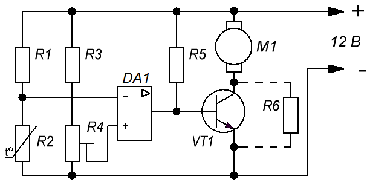
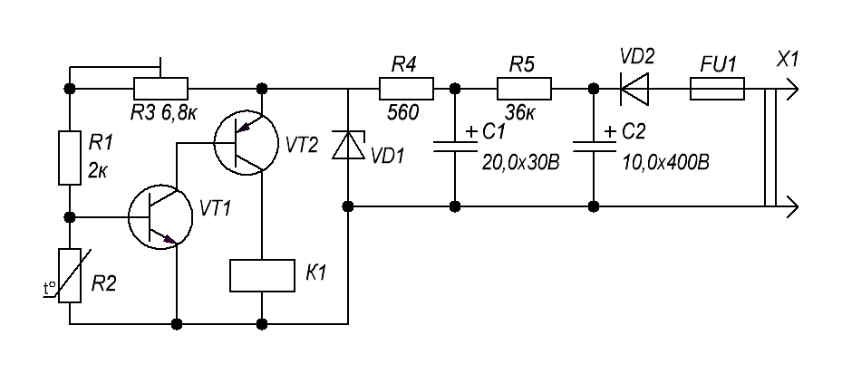
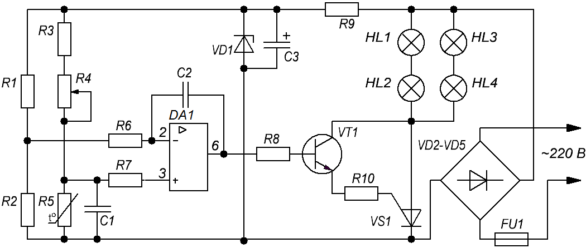
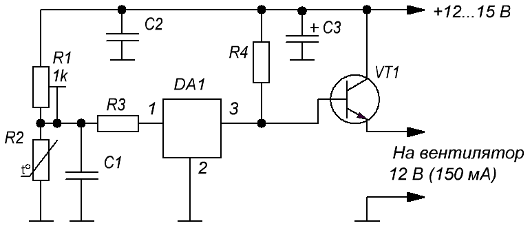

Терморегуляторы
Простейшие измерительные датчики, в том числе и реагирующие на температуру, состоят из измерительного полуплеча из двух сопротивлений, опорного и элемента, меняющего свое сопротивление в зависимости от прилаживаемой к нему температуры.
На схеме рис. 1, резисторы R1 и R2 являются измерительным элементом терморегулятора, а резисторы R3 и R4 опорным плечом устройства.
Элементом терморегулятора, реагирующим на изменение состояния измерительного плеча, является интегральный усилитель в режиме компаратора (микросхема DA1 на рис. 1). Данный режим переключает скачком выход микросхемы из состояния выключено в рабочее положение. Нагрузкой данной микросхемы является электромотор вентилятора ПК. При достижении температуры определенного значения в плече R1 и R2 происходит смещение напряжения, вход микросхемы сравнивает значение на контакте 2 и 3 и происходит переключение компаратора. Таким образом поддерживается температура на заданном уровне и производится управление работой вентилятора.

Обзор схем
На схеме (рис. 2) напряжение разности с измерительного плеча поступает на спаренный транзистор с большим коэффициентом усиления, в качестве компаратора выступает электромагнитное реле. При достижении на катушке напряжения, достаточного для втягивания сердечника, происходит ее срабатывание и подключение через ее контакты исполнительных устройств. При достижении заданной температуры, сигнал на транзисторах уменьшается, синхронно падает напряжение на катушке реле, и в какой-то момент происходит расцепление контактов.

Таблица 1
| Обозначение | Наименование | Номинал | Количество | Примечание |
|---|---|---|---|---|
| C1 | Конденсатор электролитический | 20 мкФ × 30 В | 1 | |
| C2 | Конденсатор электролитический | 10 мкФ × 400 В | 1 | |
| FU1 | Предохранитель | 0,5 А | 1 | |
| К1 | Реле | 1 | ||
| R1 | Резистор постоянный | 2 кОм/0,25 Вт | 1 | |
| R2 | Терморезистор | 10 кОм | 1 | |
| R3 | Резистор подстроечный | 6,8 кОм | 1 | |
| R4 | Резистор постоянный | 560 Ом/2 Вт | 1 | |
| R5 | Резистор постоянный | 36 кОм/2 Вт | 1 | |
| VD1 | Стабилитрон | Д814В | 1 | |
| VD2 | Диод | Д226Б | 1 | |
| VT1 | Транзистор биполярный | КТ315Б | 1 | |
| VT2 | Транзистор биполярный | МП25Б | 1 |
Особенностью такого типа реле является наличие гистерезиса — это разница в несколько градусов между включением и отключением самодельного терморегулятора, из-за присутствия в схеме электромеханического реле.
Вариант терморегулятора, предоставленный на рис. 3, практически лишен гистерезиса.

Таблица 2
| Обозначение | Наименование | Номинал | Примечание/замена |
|---|---|---|---|
| С1 | Конденсатор | 1 мкФ | |
| С2 | Конденсатор | 0,01 мкФ | |
| С3 | Конденсатор электролитический | 100 мкФ × 50 В | |
| DA1 | Операционный усилитель | К140УД6 | К140УД7, К140УД8, К153УД2 |
| FU1 | Предохранитель | 1 А | |
| HL1-HL4 | Лампы накаливания | 100 Вт × 220 В | |
| R1, R2 | Резистор постоянный | 47 кОм-0,125 Вт | |
| R3 | Резистор постоянный | 2,4 кОм-0,125 Вт | |
| R4 | Резистор подстроечный | 47 кОм | |
| R5 | Терморезистор | 47 кОм | ММТ-4 |
| R6, R7 | Резистор постоянный | 24 кОм-0,125 Вт | |
| R8 | Резистор постоянный | 10 кОм-0,125 Вт | |
| R9 | Резистор постоянный | 43 кОм-2 Вт | 2 Вт |
| R10 | Резистор постоянный | 1,8 кОм-0,125 Вт | |
| VD1 | Стабилитрон | Д814А | Д814(Б-Д) |
| VD2-VD5 | Диод | КД202К | КД202М, КД202Р |
| VS1 | Тринистор | КУ202Н | |
| VT1 | Транзистор | КТ605 | КТ940 |
Основой устройства является операционный усилитель DA1. В данной схеме он подключен с положительной обратной связью и является компаратором. Термочувствительным элементом служит резистор R5 типа ММТ-4 с отрицательным ТКЕ (при нагревании его сопротивление уменьшается).
Выносной датчик подключается через экранированный провод. Для уменьшения наводок и ложного срабатывания устройства, длина провода не должна превышать 1 метр. Нагрузка управляется через тиристор VS1 и мощность нагревателя целиком зависит от его номинала. Тиристор необходимо установить на небольшой радиатор, для отвода тепла.
Устройство не имеет гальванической развязки от сети 220 В, при настройке будьте внимательны, на элементах регулятора присутствует сетевое напряжение.
Схема терморегулятора на микросхеме TL431, с внешним питанием 12 В для использования в системах домашней автоматики приведена на рис. 4. Данный терморегулятор способен управлять компьютерным вентилятором, силовым реле, световыми индикаторами, звуковыми сигнализаторами.

Таблица 3
| Обозначение | Наименование | Номинал | Количество | Примечание |
|---|---|---|---|---|
| C1, C2 | Конденсатор | 0,1 мкФ | 2 | |
| C3 | Конденсатор электролитический | 10 мкФ × 25 В | 1 | |
| DA1 | Микросхема | TL431 | 1 | КР142ЕН19А |
| R1 | Резистор подстроечный | 4,7 кОм | 1 | |
| R2 | Терморезистор | 1,1 кОм | 1 | ММТ-4 |
| R3 | Резистор постоянный | 5,6 кОм/0,5 Вт | 1 | |
| R4 | Резистор постоянный | 1 кОм/0,5 Вт | 1 | |
| VT1 | Транзистор биполярный | КТ815 | 1 |
Источники
samelectrik.ru - Как собрать терморегулятор в домашних условиях?